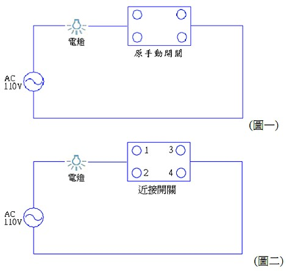
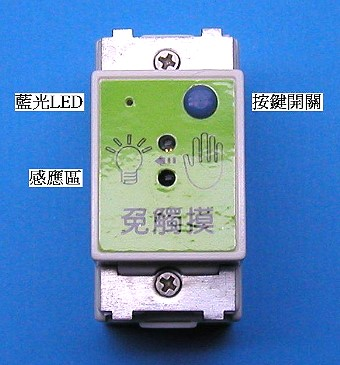

非接觸感應點燈開關
產品特性
| 1. | 接近感應，不必碰觸開關，防病菌感染。 |
| 2. | 不必碰觸開關，防觸電，不會摸髒牆壁。 |
| 3. | 與原配線相同，免重新拉線。 |
| 4. | 安裝簡單，可自行DIY。 |
| 5. | 外觀與傳統開關相同，可直接替換。 |
| 6. | 有延遲關燈功能，使用安全方便。 |
| 7. | 適用於學校、公共廁所、醫院…等公共場所。 |
產品簡介
| 1. | 新流感、腸病毒、SARS，在這個病毒橫行的時代，勤洗手是阻絕病毒感染的最佳方法，相對的手接觸也是傳染病毒的最佳途徑，因此在公共場所(醫院、診所、學校…)開關電燈，也成感染病毒的途徑之一，只要將現有開關更換成本產品，手一接近就可開關電燈，不用直接接觸到開關，減少病毒感染的機會。 |
| 2. | 在家裡浴室跟廚房是最常將手弄濕還要開關電燈的地方，也因此是最常發生觸電的地方，只要將現有開關換裝成本產品，手一接近就可開關電燈，不用直接接觸到開關，免除觸電的危險。 |
| 3. | 附加有延時關燈的功能，啟動後關燈時可延後30秒再關燈，關燈後可暫時不用摸黑走路。浴室也可於使用後讓排氣扇多運轉一段時間，降低浴室內的濕度及氣味。 |
| 4. | 外觀尺寸大小與傳統開關相同，可直接替換。與原來配線相同，不用再重新拉線。 |
| 5. | 近接感應開關燈，不用接觸，防止觸電，不會摸髒開關周圍的牆壁。 |
產品照片
操作說明
| 1. | 手靠近感應開關約5公分，LED快閃表示有感應到手接近，這時開關會點亮電燈，手再次靠近時，會關閉電燈。 |
| 2. | 按鍵按一下，LED高亮，為正常模式，手靠近開燈，再靠近一次關燈。 |
| 3. | 按鍵按一下，LED微亮，為延遲關燈模式，手靠近開燈，再靠近一次LED慢閃，然後LED會越閃越快至30秒後才關燈。 |
產品規格
| 體積大小 | 44×22×37 mm |
| 單蕊線 | ψ1.6或ψ2.0 mm切掉外皮包覆 18mm |
| 適用電壓 | AC 110V |
| 負載範圍 | 5W～200W傳統燈泡，10W～100W日光燈或省電燈泡 |
| 消耗功率 | 10mW |
安裝方法

| 1. | 切斷電源，打開壁上開關蓋板，取出開關，拆除電線，銅線如有氧化生銹，請清潔乾淨。 |
| 2. | 將原開關其中一條電線插入近接開關1或2孔內，再將另一條電線插入近接開關3或4孔內。 |
| 3. | 原配線圖：如（圖一），改裝近接開關後如（圖二）。 |
注意事項
| 1. | 安裝前請先關閉電源，以免發生觸電危險。 |
| 2. | 安裝前請留意本產品之電壓及負載規格。 |
| 3. | 避免陽光直接曝曬及潮溼。 |
| 4. | 本產品於停電後再復電時，均會自動進入正常模式。 |
| 5. | 少部份廠牌省電燈泡，因其內部電路設計不同，與本產品搭配會有閃爍現象，請於燈泡兩端並接上一個0.1uF耐壓400V的電容。 |
近接開關圖示說明
